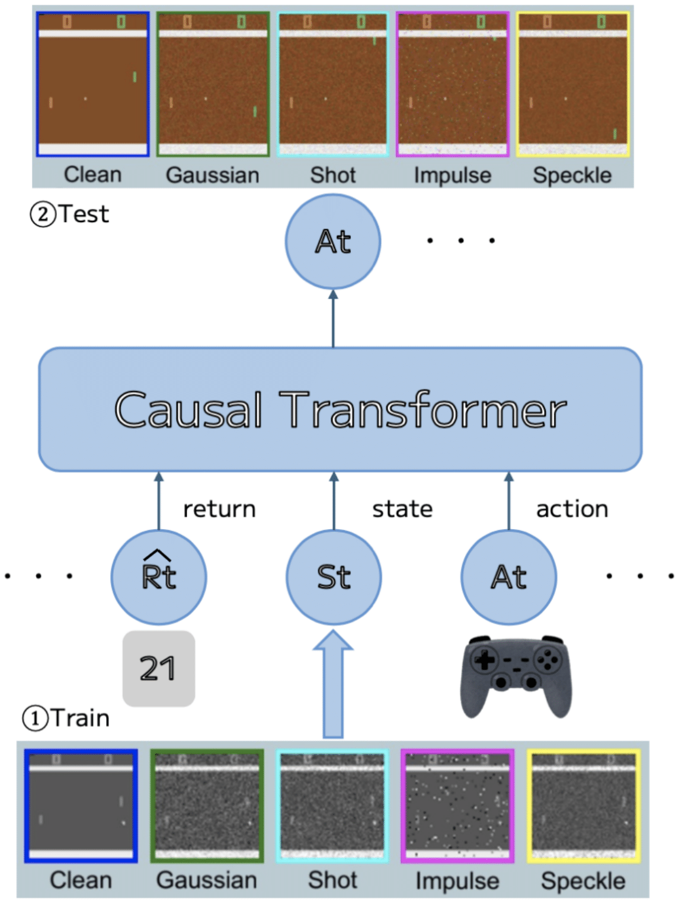

概要
Abstract
本研究では，Transformerベースのオフライン強化学習のロバスト性を検証する．オフライン強化学習のための状態データにノイズを加えて訓練を行い，ノイズ下訓練での性能を評価する．評価実験では、４種類のAtariゲーム（Breakout，Pong，Qbert，Seaquest）に関して，5つの評価テスト（クリーン，ガウシアン，ショット，インパルス，スペックル）でのスコアで比較する．実験結果は，通常訓練 (クリーン)に対する全てのノイズ評価テストにおいて，Atariゲームのスコアが低下した．その対策として訓練時にノイズ系によるデータ拡張訓練を導入することで，Atariゲームのスコア向上の傾向が確認された．この結果は，ノイズ評価テストに対する脆弱性とデータ拡張訓練によるロバスト性向上を示している．
研究背景
Background
- Decision Transformer に対するロバスト性検証は未確認
- ゲームタスクへ混入可能性のあるノイズ系を対象（ぼかし，天候，デジタル系は除外）
Atariゲームにおける深層強化学習では敵対的摂動への脆弱性が報告されている．本研究では，自然環境で想定されるランダムノイズにも注目し，ロバスト性を向上させる手法を検討する．

提案手法
Proposed Method
- 通常訓練とデータ拡張訓練（各訓練は約 20,000 試行 ≒ 4,000 × 5 epoch）
-
評価テスト（各テストは 50 試行 ≒ 10 × 5 epoch）
※ノイズ比率訓練：評価テストは 25 試行 ≒ 5 × 5 epoch

実験結果
Results
脆弱性検証（定性評価）
Vulnerability Check (Qualitative)
Clean以外のノイズ系テストでは，エージェントが学習しきれていない．

Clean

Gaus

Shot

Imp

Spe
脆弱性検証（定量評価）
Vulnerability Evaluation (Quantitative)
- 通常データ訓練モデルに各種ノイズを付与するとゲームスコアが大幅に低下（ノイズに対して脆弱）
- スコア分布も大きく悪化


ロバスト性検証（定性評価）
Robustness Check (Qualitative)
- 各種訓練データセットに対応するテストの結果
- Clean以外のノイズ系テストでも，エージェントが学習できている
Clean

Gaus

Shot

Imp

Spe
ロバスト性検証（定量評価）
Robustness Evaluation (Quantitative)
- 訓練したノイズデータセットに対応するテストが最高スコア（ノイズに対してロバスト）
- 他ゲームタスクでもノイズデータセット訓練でスコア向上傾向
- 通常訓練と比較してスコア分布が全体的に向上


Clean
Gaus
Shot
Imp
Spe
まとめ
Conclusion
- Common Corruptionにおける各種ノイズ評価テストにて脆弱性が存在することを示した
- データ拡張訓練により，ロバスト性が向上することを示した